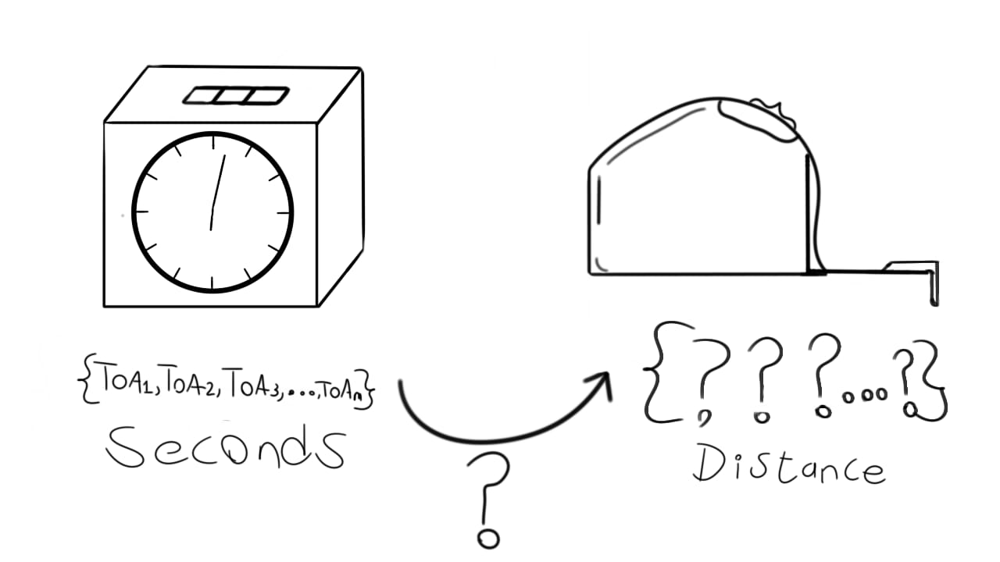
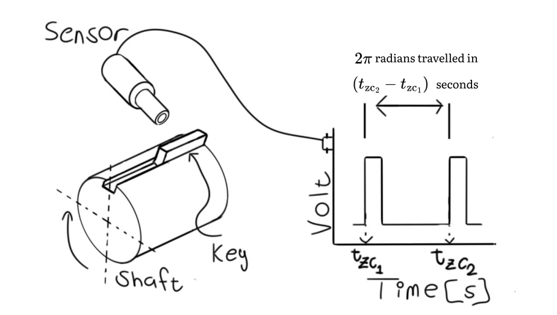

You are here
Reviews
Please read through the chapter prior to activating a review as I have kept the chapters deliberately terse.
Click to activate a review 👇 for more detailed comments from other experts.
Angle of Arrival (AoA)
We are 30% through the tutorial. At this stage, we've learned how to process the raw analogue waveforms into a vector of Time of Arrivals (ToAs). We've said that, at the end of this tutorial, we will be able to infer vibration characteristics of each blade's tip deflections. This presents an interesting challenge.
Tip deflections are entities of distance.
ToAs represent time.
The two quantities are in different domains.
We therefore need to convert from time to distance. How on earth will we do this? You may as well open a file full of accelerometer measurements and attempt to infer the temperature of the instrumented structure.

Fortunately, a fundamental mathematical property of bodies that rotate about an axis is known to us. A body that rotates an entire circle has traveled 360 degrees, or \(2\pi\) radians.
Radians may not yet be in units of mm or meters. It does, however, transport us into the distance domain.
To perform this conversion, we use a shaft encoder.
Outcomes
Understand we use a shaft encoder to calculate the shaft speed, \(\Omega\), and the start and end of each revolution.
Understand we need to find the shaft revolution in which each ToA occurs.
Understand each ToA is used to calculate the precise shaft circumferential displacement in said revolution. This is the AoA of each ToA.
Write a function that calculates a matrix of AoAs from the shaft encoder zero-crossing times and the ToAs.
Shaft encoder
Most BTT systems rely on a shaft encoder installed on the rotor. A shaft encoder produces a pulse train, similar to the proximity probes discussed in the last chapter.
A typical shaft encoder is shown in Figure 2 below. It consists of a rotating shaft with a key and a stationary sensor mounted next to the key.

The sensor in this case produces One Pulse per Revolution (OPR). Some shaft encoders produce Multiple Pulses per Revolution (MPR). This tutorial considers the OPR case. OPR encoders are more prevalent than their MPR counterparts.
We extract the ToAs from the OPR signal with a trigger criteria, just like we used for the blade ToAs in the previous chapter. The OPR timestamps are often referred to as zero-crossing times. This terminology creates the impression they are registered only when the signal crosses 0 V. Though this is often the case, these timestamps can be extracted using any trigger criteria. Each timestamp therefore corresponds to the start of a new shaft revolution.
Zero-crossing times
A zero-crossing time is the exact timestamp a revolution starts. The next timestamp is, by definition, the exact time the revolution ends and the next one starts.
Do not confuse zero-crossing times and ToAs:
-
Zero-crossing times refer to timestamps captured by the shaft encoder. They are the start of each revolution. I've added the subscript \(\mathbf{\textrm{zc}}\) to all zero-crossing times to differentiate them from the ToAs.
-
ToAs refer to the timestamps captured by the proximity probes in the casing. They are the times the blades passed the probes.
After processing the shaft encoder's analogue waveform, we have a vector of zero-crossing times. The shaft speed between them can be calculated from Equation 1 below.
Symbols
| Symbol | Description |
|---|---|
| \(\Omega_n\) | Shaft speed in the \(n\)th revolution |
| \(n\) | The revolution number |
| \(t_{\textrm{zc}_{n}}\) | The \(n\)th zero-crossing time |
An example of the shaft speed calculated from Equation 1 is presented in Figure 3 below.
The figure above presents the run-up and run-down of a shaft between 950 RPM and 1325 RPM over approximately 41 seconds.
Encoder-less techniques
Some publications refer to encoder-less BTT systems. These are advanced techniques normally used when there's no encoder. The techniques are beyond the scope of this tutorial.
Which probes can you use for the shaft encoder?
You can use any probe capable of responding to the presence of a discontinuity on the shaft. I often use eddy current probes or optical pickups.
At which circumferential position should the probe be installed?
It makes no difference where the probe is installed. The only requirement is the probe must be able to detect the presence of the shaft's discontinuity.
Angle of Arrival (AoA)
The shaft's circumferential position when the ToA is registered is referred to as the Angle of Arrival (AoA). It is calculated with respect to the revolution in which it occurs. In other words, it is always a quantity between 0 and \(2 \pi\) within each revolution.
We use Equation 2 below to calculate the AoA.
Symbols
| Symbol | Description |
|---|---|
| \(\textrm{AoA} (\textrm{ToA})\) | The AoA corresponding to the ToA |
| \(n\) | The revolution number in which the ToA occurs |
| \(\textrm{ToA}\) | The ToA. It must occur within revolution \(n\) |
| \(\Omega_n\) | The shaft speed in the \(n\)th revolution |
| \(t_{\text{zc}_{n}}\) | The zero-crossing time at the start of the \(n\)th revolution |
Our algorithm must perform two cardinal tasks to calculate AoAs from ToAs:
-
Determine the revolution number in which each ToA occurs.
-
Calculate the AoA of each ToA within its revolution.
This two-step process can be performed with a single function. In this chapter, we write a function receiving a vector of ToAs and a vector of zero-crossing times as inputs. It returns a matrix of values that includes the AoAs and identified revolution numbers. We will, once again, use Numba to speed things up. Learning how to leverage Numba gives you a skill with applications in most code-centric industries.
Following along
The worksheet for this chapter can be downloaded here .
You can open a Google Colab session of the worksheet here:  .
.
You need to use one of these Python versions to run the worksheet:


 .
.
Algorithm
To perform this conversion from time to angle, our algorithm calculates several quantities for each ToA:
-
The revolution number, \(n\), in which the ToA occurs.
-
The zero-crossing times at the start and end of the ToA's revolution, referred to as \(zc_n\) and \(zc_{n+1}\) respectively.
-
The angular velocity of the shaft in the revolution, \(\Omega_n\).
-
The shaft's angular position when the ToA was triggered. This is referred to as the AoA of the ToA. Each ToA therefore has one AoA.
Let's consider a simple example. We have measured 6 ToAs and 3 zero-crossing times:
We place the ToAs and the zero-crossing times on a horizontal axis. This makes it simpler to visualize.
The clickable tabs below present the calculations for each ToA.
ToAs = [ 0.3 0.5 0.7 1.3 1.5 1.7 ]
|
|
↓
__|_______________________________|______________________________|__
t_zc_times = [0.0 1.0 2.0]
revolution_no = [0 1 2 ]
Calculated values:
current_revolution = 0
t_zc_start = 0.0
t_zc_end = 1.0
Omega = 2 π / (t_zc_end - t_zc_start) = 2 π / 1.0 = 2.0 π
AoA = Omega * (ToA - t_zc_start) = 2 π * (0.3 - 0.0) = 0.6 π
The allocated values after the first ToA is shown below 👇.
| n | n_start_time | n_end_time | Omega | ToA | AoA |
|---|---|---|---|---|---|
| 0 | 0.0 | 1.0 | 2.0π | 0.3 | 0.6 π |
| ? | ? | ? | ? | ? | ? |
| ? | ? | ? | ? | ? | ? |
| ? | ? | ? | ? | ? | ? |
| ? | ? | ? | ? | ? | ? |
| ? | ? | ? | ? | ? | ? |
ToAs = [ 0.3 0.5 0.7 1.3 1.5 1.7 ]
|
|
↓
__|_______________________________|______________________________|__
t_zc_times = [0.0 1.0 2.0]
revolution_no = [0 1 2 ]
Calculated values:
current_revolution = 0
t_zc_start = 0.0
t_zc_end = 1.0
Omega = 2 π / (t_zc_end - t_zc_start) = 2 π / 1.0 = 2.0 π
AoA = Omega * (ToA - t_zc_start) = 2 π * (0.5 - 0.0) = 1.0 π
The allocated values after the second ToA is shown below 👇.
| n | n_start_time | n_end_time | Omega | ToA | AoA |
|---|---|---|---|---|---|
| 0 | 0.0 | 1.0 | 2.0π | 0.3 | 0.6 π |
| 0 | 0.0 | 1.0 | 2.0π | 0.5 | 1.0 π |
| ? | ? | ? | ? | ? | ? |
| ? | ? | ? | ? | ? | ? |
| ? | ? | ? | ? | ? | ? |
| ? | ? | ? | ? | ? | ? |
ToAs = [ 0.3 0.5 0.7 1.3 1.5 1.7 ]
|
|
↓
__|_______________________________|______________________________|__
t_zc_times = [0.0 1.0 2.0]
revolution_no = [0 1 2 ]
Calculated values:
current_revolution = 0
t_zc_start = 0.0
t_zc_end = 1.0
Omega = 2 π / (t_zc_end - t_zc_start) = 2 π / 1.0 = 2.0 π
AoA = Omega * (ToA - t_zc_start) = 2 π * (0.7 - 0.0) = 1.4 π
The allocated values after the third ToA is shown below 👇.
| n | n_start_time | n_end_time | Omega | ToA | AoA |
|---|---|---|---|---|---|
| 0 | 0.0 | 1.0 | 2.0π | 0.3 | 0.6 π |
| 0 | 0.0 | 1.0 | 2.0π | 0.5 | 1.0 π |
| 0 | 0.0 | 1.0 | 2.0π | 0.7 | 1.4 π |
| ? | ? | ? | ? | ? | ? |
| ? | ? | ? | ? | ? | ? |
| ? | ? | ? | ? | ? | ? |
ToAs = [ 0.3 0.5 0.7 1.3 1.5 1.7 ]
|
|
↓
__|_______________________________|______________________________|__
t_zc_times = [0.0 1.0 2.0]
revolution_no = [0 1 2 ]
Calculated values:
current_revolution = 1
t_zc_start = 1.0
t_zc_end = 2.0
Omega = 2 π / (t_zc_end - t_zc_start) = 2 π / 1.0 = 2.0 π
AoA = Omega * (ToA - t_zc_start) = 2 π * (1.3 - 1.0) = 0.6 π
The allocated values after the fourth ToA is shown below 👇.
| n | n_start_time | n_end_time | Omega | ToA | AoA |
|---|---|---|---|---|---|
| 0 | 0.0 | 1.0 | 2.0π | 0.3 | 0.6 π |
| 0 | 0.0 | 1.0 | 2.0π | 0.5 | 1.0 π |
| 0 | 0.0 | 1.0 | 2.0π | 0.7 | 1.4 π |
| 1 | 1.0 | 2.0 | 2.0π | 1.3 | 0.6 π |
| ? | ? | ? | ? | ? | ? |
| ? | ? | ? | ? | ? | ? |
ToAs = [ 0.3 0.5 0.7 1.3 1.5 1.7 ]
|
|
↓
__|_______________________________|______________________________|__
t_zc_times = [0.0 1.0 2.0]
revolution_no = [0 1 2 ]
Calculated values:
current_revolution = 1
t_zc_start = 1.0
t_zc_end = 2.0
Omega = 2 π / (t_zc_end - t_zc_start) = 2 π / 1.0 = 2.0 π
AoA = Omega * (ToA - t_zc_start) = 2 π * (1.5 - 1.0) = 1.0 π
The allocated values after the fifth ToA is shown below 👇.
| n | n_start_time | n_end_time | Omega | ToA | AoA |
|---|---|---|---|---|---|
| 0 | 0.0 | 1.0 | 2.0π | 0.3 | 0.6 π |
| 0 | 0.0 | 1.0 | 2.0π | 0.5 | 1.0 π |
| 0 | 0.0 | 1.0 | 2.0π | 0.7 | 1.4 π |
| 1 | 1.0 | 2.0 | 2.0π | 1.3 | 0.6 π |
| 1 | 1.0 | 2.0 | 2.0π | 1.5 | 1.0 π |
| ? | ? | ? | ? | ? | ? |
ToAs = [ 0.3 0.5 0.7 1.3 1.5 1.7 ]
|
|
↓
__|_______________________________|______________________________|__
t_zc_times = [0.0 1.0 2.0]
revolution_no = [0 1 2 ]
Calculated values:
current_revolution = 1
t_zc_start = 1.0
t_zc_end = 2.0
Omega = 2 π / (t_zc_end - t_zc_start) = 2 π / 1.0 = 2.0 π
AoA = Omega * (ToA - t_zc_start) = 2 π * (1.7 - 1.0) = 1.4 π
The allocated values after the sixth ToA is shown below 👇.
| n | n_start_time | n_end_time | Omega | ToA | AoA |
|---|---|---|---|---|---|
| 0 | 0.0 | 1.0 | 2.0π | 0.3 | 0.6 π |
| 0 | 0.0 | 1.0 | 2.0π | 0.5 | 1.0 π |
| 0 | 0.0 | 1.0 | 2.0π | 0.7 | 1.4 π |
| 1 | 1.0 | 2.0 | 2.0π | 1.3 | 0.6 π |
| 1 | 1.0 | 2.0 | 2.0π | 1.5 | 1.0 π |
| 1 | 1.0 | 2.0 | 2.0π | 1.7 | 1.4 π |
Each calculation is performed sequentially. The results of each calculation are appended to the output matrix.
The blade count is unknown
You'll notice I have not stated how many blades are on the rotor for this simple example. This was by choice. At this stage of analysis, we do not need to incorporate the number of blades. We simply need to determine the revolution in which a ToA occurs and the corresponding AoA.
You may be able to guess there are 3 blades. You should, however, not adapt your algorithm to expect a specific number of them. The reason for this is there can be missing or double ToAs and zero-crossing times. If you expect a certain number of time stamps but the measurement does not contain exactly what you require, your analysis will be corrupted.
The algorithm presented in this chapter may be more complex than slicing the ToAs equally into bins, but it will save you from a lot of headaches in the future.
Based on the above example, we can write the code to calculate the AoA of each ToA. I have included comments that can be opened by clicking on the symbols.
If these symbols are not visible, refresh the page. If they're still not visible, download Google Chrome and try again 😁.
-
Imports
There are two imports:
-
njitfrom thenumbalibrary.njitinstructsnumbato compile the function to machine code. -
numpy. We rename asnp. This means we can access the Numpy library throughnp. This is a common convention. Numpy is a numerical computation library.
-
-
Function definition
In Python, you define a function with the
defkeyword. We define a function calledcalculate_aoain Line 5. This function has two arguments (an argument is a fancy word for an input):-
arr_opr_zero_crossing: the array of OPR zero-crossing times. -
arr_probe_toas: the array of ToAs from a single probe.
-
-
Initialize the AoA matrix and other variables
Here we initialize constants and variables required in the rest of the function:
-
In Line 31, we calculate the number of ToAs in
arr_probe_toas. We need this length to initialize the output matrix. -
In Line 32 we instantiate the output matrix. The output matrix will contain the algorithm's results. This matrix is called
AoA_matrix. The AoA matrix is a (num_toas\(\times\) 6) matrix. Its columns represent:- column 1: The revolution number within which each ToA falls
- column 2: The start time of the revolution
- column 3: The end time of the revolution
- column 4: The angular velocity of the shaft within the revolution
- column 5: The ToA
- column 6: The AoA of the ToA
-
In Line 34 we set the entire revolution number column to -1. We use -1 to flag the ToAs that could not be converted to AoAs.
-
In Line 36-38 we introduce the concept of the current revolution. Since this is a sequential function, we process each shaft revolution in turn.
current_nis the revolution number the ToAs are currently in,current_revolution_start_timeandcurrent_revolution_end_timeis the start and end zero-crossing times of the current revolution.
These "current" values are updated as we iterate through the ToAs.
-
-
Master loop
This
forloop iterates through each ToA inarr_probe_toas. The counter,i, starts at0- corresponding to the first ToA value - and increments after each iteration. The variabletoais the current ToA value being considered. -
Search for the correct shaft revolution
Here we find the shaft revolution within which the current ToA occurs. It repeatedly checks, in Line 42, if the current ToA is larger than the current revolution's end time. If it is, the shaft has completed a revolution since the previous ToA. We therefore increment the current revolution (
current_n) variable. We also update the current revolution's start and end times in lines 46 and 47.The statements in Lines 44 and 49 checks whether we have iterated over all the zero-crossing times. If this happens, our algorithm cannot perform any more comparisons. We therefore break out of the loop.
-
Calculate the AoA matrix values for each ToA
This is where we calculate the AoAs. In Line 52 we check whether the current ToA is larger than the current revolution's start time. If this test is passed, it means this ToA falls within the
current_nth revolution. We assign the current revolution's start and end time to the AoA matrix in lines 53 - 55.In lines 56 - 65 the shaft speed and AoA as defined in Equation 1 and Equation 2 are calculated.
-
When we reach Line 67, it means we have either iterated over all ToAs, or we have reached the end of the encoder's timestamps.
The output matrix is returned.
Example usage
We'll use some real experimental data to test this function. We use a shaft run-up and run-down from Du Toit et al. (Du Toit et al., 2019)1. In the experiment, a five blade rotor was run-up and run-down, as already indicated in Figure 3. Four eddy current probes were used to measure the ToAs.
The ToAs have already been extracted in this dataset.
We use only one probe's data for this example:
- Download the data from Bladesight's repository. The dataset comprises 6 measurements. Each test has one set of OPR zero-crossing times and four sets of ToAs. There is also a set of MPR values not used in this chapter.
- Load the OPR zero-crossing times from Test 1 as a Pandas DataFrame.
- Load the first proximity probe's ToAs from Test 1 as a Pandas DataFrame.
- Call the
calculate_aoafunction with the OPR zero-crossing times and the ToAs as inputs. Note we convert the Pandas columns to Numpy arrays with.to_numpy() - The algorithm returns a matrix. Numpy matrices and arrays do not have column names. Here we convert the matrix into a DataFrame. DataFrames are much simpler to work with.
The first 10 rows of the AoA DataFrame are presented in Table 1 below.
| n | n_start_time | n_end_time | Omega | ToA | AoA |
|---|---|---|---|---|---|
| -1 | 0 | 0 | 0 | 0 | 0 |
| -1 | 0 | 0 | 0 | 0 | 0 |
| 0 | 0.0269571 | 0.0897037 | 100.136 | 0.0297463 | 0.279297 |
| 0 | 0.0269571 | 0.0897037 | 100.136 | 0.042336 | 1.53997 |
| 0 | 0.0269571 | 0.0897037 | 100.136 | 0.05479 | 2.78707 |
| 0 | 0.0269571 | 0.0897037 | 100.136 | 0.0673586 | 4.04564 |
| 0 | 0.0269571 | 0.0897037 | 100.136 | 0.079938 | 5.30528 |
| 1 | 0.0897037 | 0.152247 | 100.462 | 0.0924866 | 0.279575 |
| 1 | 0.0897037 | 0.152247 | 100.462 | 0.105059 | 1.54262 |
| 1 | 0.0897037 | 0.152247 | 100.462 | 0.117489 | 2.79133 |
We note two observations:
- The first two rows have
nvalues of -1. This means the first two ToAs were recorded before the first zero-crossing time. We can therefore not calculate the AoAs for these ToAs. You'll find a couple of these values at the end of the DataFrame as well. - The
AoAvalues repeat themselves every 5 rows. This is because the rotor has 5 blades.
We drop the ToAs we could not convert to AoAs. These values are identified where n equals -1.
- Because we dropped the first two rows of data, the DataFrame's index starts at 2. It's always best to reset the index after dropping rows, unless the index contains important information.
In Figure 4 below, we present a plot of the AoAs for the first blade over all revolutions. We also plot the angular velocity on a secondary y-axis.
In Figure 4 above, the AoAs are not constant. Why not? In a sense, the entire discipline of BTT is about understanding what causes the AoAs to change.
We briefly discuss six topics that may be responsible for the AoAs to change:
Discussion
Sensor limited bandwidth noise
The drift in Figure 4 appears to be correlated to the rotor's angular velocity. In other words, as the shaft speeds up, the AoAs increase proportionally to the rotational speed. The moment the rotor starts to run down, the AoAs decrease.
This is not related to blade vibration. This is related to the bandwidth of the sensor you are using. Any sensor has a limited frequency response. As the tips move faster, their presence inside your sensor's field of view become shorter. This causes the input function experienced by the sensor to contain more energy at higher frequencies.
If your sensor's bandwidth is limited, it cuts out these high frequency components. This results in lower amplitude pulses. A lower amplitude pulse will manifest itself as delayed ToA triggering, and hence a larger AoA value.
This is not a problem, though, because our resonance events occur at higher frequencies than this phenomenon. In later chapters, we remove this noise with a detrending algorithm.
Blade vibration
There are four clear resonance events in this signal. They occur at 7.5, 17.83, 24.3, and 34.5 seconds respectively. We delve into the theory of resonance in Chapter 7. For now, we highlight there are just two unique resonances. The two resonances occur at 1087 RPM and 1275 RPM on both the run-up and the run-down.
High frequency noise
The signal also contains high-frequency random noise. It has many possible causes such as electrical noise, shaft torsional vibration, casing vibration, or higher frequency blade vibration. This noise may be filtered out. You can also construct your inference algorithms to handle them.
Non-Constant shaft speed
In Equation 1 we assumed the rotor's speed was constant within a revolution. This assumption, though not strictly correct, simplifies our processing and often incurs acceptably small errors. If you're interested in the effect of non-constant shaft speed on the AoAs, you can read about it here (Diamond et al., 2019)2.
Untwist and centrifugal stiffening
As the rotor speeds up, the blades are subjected to increased centrifugal force. Most blade designs react to the centrifugal force by twisting. The twisting of the blade causes the AoA to change, because the blade's tip is now in a different static position.
You need to understand your blade's design to understand how it reacts to centrifugal forces.
Increased pressure on blades
Increased rotor speed will cause increased fluid pressure on the blades. This will result in a static deflection of the blade. This deflection will cause the AoA to change. How much the AoA changes depends on the blade's stiffness and the fluid pressure.
Conclusion
In this chapter, we have converted ToAs to AoAs. We are now firmly positioned in the distance domain, where we can reason about deflection, not time. At this stage we have not used any information about the rotor's characteristics. In the next chapter, we start to make the analysis specific to our rotor. We use the blade count to allocate the AoAs to the correct blades.
Outcomes
Understand we use a shaft encoder to calculate the shaft speed, \(\Omega\), and the start and end of each revolution.
Understand we need to find the revolution in which each ToA occurs.
Understand each ToA is used to calculate the precise shaft circumferential displacement in said revolution. This is the AoA of each ToA.
Write a function that calculates a matrix of AoAs from the shaft encoder zero-crossing times and the ToAs.
I present coding exercises 👇 to solidify your the concepts covered in this chapter.
Acknowledgements
Thanks to Justin Smith and Alex Brocco for reviewing this chapter and providing feedback.
A special thanks to Mirosław Witoś for his detailed review of this chapter.

Dawie Diamond
Coding Exercises
Here are some coding exercises to solidify the concepts we've covered in this chapter.
Problem 1 
In this chapter, we've written the calculate_aoa function. This function receives and returns Numpy arrays, though we work with Pandas DataFrames natively. We therefore needed to use the .to_numpy() method to convert the Pandas objects to numpy arrays. We also needed to cast the resulting matrix into a Pandas DataFrame, and drop the ToAs we could not convert to AoAs.
In future, we do not want to do this every time we call the function.
Write a new function, called transform_ToAs_to_AoAs, accepting Pandas DataFrames as inputs and returning a Pandas DataFrame as output. The function should call the calculate_aoa function to do the actual work.
Reveal answer (Please try it yourself before revealing the solution)
- We may want to pass in DataFrames with different column names than the ones we used in the example. We therefore use the
.ilocmethod to get the first column of each DataFrame, regardless of what it is called.
Example usage:
Problem 2 
Because our Python functions are converted to C, one is tempted to treat code inefficiencies with a wink and a wry smile, as one does with a child that does something naughty you are secretly proud of.
We must, however, resist this temptation. We must always strive to write efficient code.
There are unnecessary calculations in the calculate_aoa function. Can you spot where? Rewrite the function to remove this inefficiency.
Reveal answer (Please try it yourself before revealing the solution)
Problem 3 
The dataset we used in this chapter also has MPR zero-crossing times we did not use. These values can be loaded with this command:
The MPR encoder used for this measurement has 79 sections. You can therefore assume each encoder section represents \(\frac{1}{79}\)th of a rotation.
Write a new function, calculate_aoa_from_mpr, accepting the MPR timestamps, the number of sections in the MPR, and the ToAs as inputs. The function should return a DataFrame with the AoAs. The resulting AoA matrix should also include the MPR section number within which each ToA occurs.
Reveal answer (Please try it yourself before revealing the solution)
1 2 3 4 5 6 7 8 9 10 11 12 13 14 15 16 17 18 19 20 21 22 23 24 25 26 27 28 29 30 31 32 33 34 35 36 37 38 39 40 41 42 43 44 45 46 47 48 49 50 51 52 53 54 55 56 57 58 59 60 61 62 63 64 65 66 67 68 69 70 71 72 73 74 75 76 77 78 79 80 81 82 83 84 85 86 87 88 89 90 91 92 93 94 95 96 97 98 99 100 101 102 103 104 105 106 107 108 109 110 111 112 113 114 115 116 117 118 119 120 121 122 123 | |
Note
MPR encoder signal processing is, however, nontrivial. For instance, we have assumed here all encoder sections have the same circumferential width. This is almost never the case. I have recently added a correct MPR approach to Bladesight. I'll write a short tutorial on how to use it soon.
The function calculate_aoa_from_mpr increments each section, instead of each revolution. The function can, however, transform the ToAs with an OPR encoder if you set mpr_sections to 1.
In Figure 5 below, we show the AoAs calculated from the MPR encoder vs the same values calculated from the OPR encoder. The AoAs from the MPR algorithm appear less noisy than the AoAs from the OPR algorithm.
MPR encoders will always produce more accurate BTT results than OPR encoders. One reason for this is because MPR encoders capture high frequency shaft torsional vibration. This allows us to remove it from the AoAs. An OPR encoder cannot capture this torsional vibration. High frequency shaft torsional vibration therefore appears as high-frequency content in our AoAs when we use OPR encoders.
-
Du Toit, R., Diamond, D., Heyns, P.S., 2019. A stochastic hybrid blade tip timing approach for the identification and classification of turbomachine blade damage. Mechanical Systems and Signal Processing 121, 389--411. ↩
-
Diamond, D., Heyns, P.S., Oberholster, A., 2019. Improved blade tip timing measurements during transient conditions using a state space model. Mechanical Systems and Signal Processing 122, 555--579. ↩